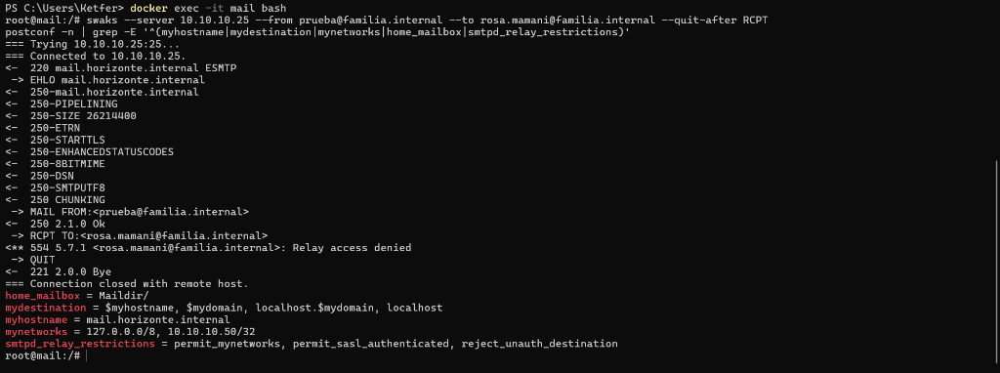
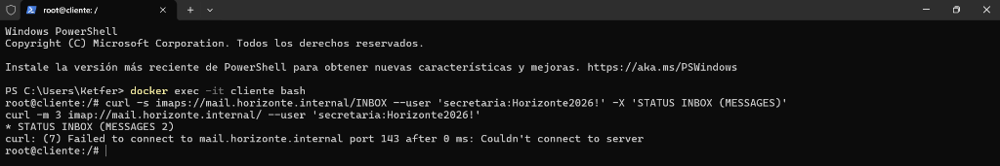
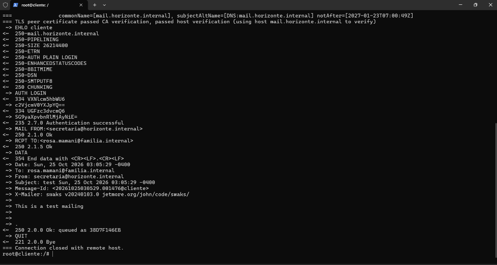
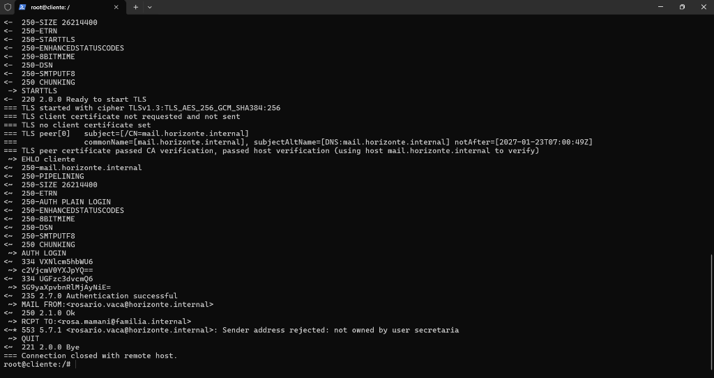
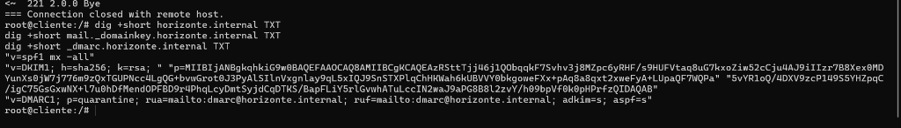
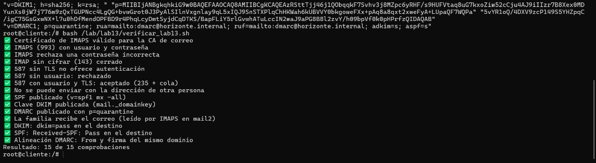

Correo Institucional Seguro con Postfix y Dovecot
Implementación, endurecimiento criptográfico (TLS 1.3, SPF, DKIM, DMARC), análisis forense de cabeceras, defensa antispam y plan estratégico de migración.
- Estudiante Principal: Ketfer Gianella Salazar
- Equipo de Trabajo: Charles Y. Conde, Brian Calás, Marco Barriga, Adaniel Balderrama
- Materia: Tecnología Web I (SIS-0150) — Semestre 6
- Docente Evaluador: M.Sc. Ing. Jimmy Nataniel Requena Llorentty
- Repositorio GitHub:
Grupo-Kali-Linuxxxx/Correo-institucional-con-Postfix-y-Dovecot - Sede: Santa Cruz de la Sierra — Octubre 2026
- MTA & MDA: Postfix 3.8 + Dovecot 2.3 en Maildir/ con TLS obligatorio.
- Seguridad de Puertos: Puerto 143 cerrado; IMAPS 993 y Submission 587 con SASL.
- Tríada Criptográfica: SPF
-all, DKIM RSA 2048-bit y DMARCp=quarantine. - Nivel Estratégico (10/10): Análisis forense, Rspamd + ClamAV, política y plan de migración.
El Recorrido Completo: MUA → MSA → MTA → MDA → IMAPS
Flujo extremo a extremo demostrando separación de roles y cifrado obligatorio en cada salto.
| Protocolo | Puerto | Función y Estado de Cifrado |
|---|---|---|
| SMTP | 25 | Transporte inter-servidor (MTA a MTA). Cifrado oportunista/forzado STARTTLS. |
| Submission | 587 | Inyección de clientes (MUA a MSA). TLS + SASL obligatorio. |
| IMAP (143) | 143 | ❌ CLAUSURADO (port=0). Evita intercepción en texto claro. |
| IMAPS | 993 | ✅ ACTIVO (TLS implícito). Sincronización segura de buzón. |
| POP3 | 110/995 | Descarga y borrado local. Obsoleto para uso multidispositivo. |
Almacenamiento Maildir, Alias y Blindaje contra Relé Abierto
Configuración segura en mail.horizonte.internal (10.10.10.25) con buzones jerárquicos.

- Formato Maildir:
home_mailbox = Maildir/elimina el cuello de botella de bloqueo de archivos Mbox y aísla cada mensaje en archivos independientes. - Control de Red:
mynetworks = 127.0.0.0/8, 10.10.10.50/32autoriza únicamente el loopback y el nodo de administración. - Alias Corporativos:
/etc/aliasesenrutainscripcioneshaciasecretariaydireccion. - Bloqueo Anti-Relay:
smtpd_relay_restrictions = permit_mynetworks, permit_sasl_authenticated, reject_unauth_destination.
Acceso Seguro a Buzones vía IMAPS (993) y Clausura del Puerto 143
Protección total de credenciales y mensajes en tránsito eliminando accesos en texto plano.

- Cierre Estricto de IMAP 143:
inet_listener imap { port = 0 }impide que Dovecot escuche en claro, mitigando ataques de captura pasiva (Wireshark). - Certificados TLS Institucionales: Validación con la CA institucional mediante
ssl_cert = </etc/ssl/correo/servidor.crt. - Socket SASL para Postfix: Dovecot publica
/var/spool/postfix/private/authpermitiendo autenticar clientes SMTP sin duplicar bases de datos. - Clientes Homologados: Conexión validada para Thunderbird de usuarios directivos y docentes.
Servicio Submission en Puerto 587: TLS Obligatorio y Autenticación SASL
Inyección de correos reservada exclusivamente a usuarios verificados con cifrado en tránsito.

smtpd_tls_auth_only=yes garantiza que Postfix no ofrece autenticación SASL hasta que la sesión negocie TLS 1.3, evitando la fuga accidental de hashes de contraseñas.
Control Anti-Suplantación (*Anti-Spoofing*) en Postfix
Garantía estricta de que ningún usuario pueda emitir mensajes usurpando la identidad de otro colega.

- Directiva de Coincidencia:
reject_sender_login_mismatchobliga a Postfix a contrastar las credenciales SASL con el remitente enMAIL FROM. - Tabla de Mapeo PCRE:
/etc/postfix/remitentes.pcredefine que la cuentasecretariasolo puede emitir comosecretaria@horizonte.internalo bajo el alias institucional autorizadoinscripciones@horizonte.internal. - Mitigación de Phishing Interno: Impide que una cuenta comprometida sea utilizada por atacantes para enviar órdenes de pago o instrucciones fraudulentas fingiendo ser el Director General.
La Tríada Criptográfica en BIND 9: SPF, OpenDKIM y DMARC
Blindaje de la reputación institucional en los servidores DNS autoritativos (10.10.10.2 / 10.10.10.3).

- SPF (RFC 7208):
v=spf1 mx -all. Rechazo duro (-all) para cualquier host que no sea el registro MX del colegio (mail.horizonte.internal). - DKIM (RFC 6376): Clave RSA de 2048 bits gestionada por OpenDKIM con selector
mail. Firma criptográfica del cuerpo (bh=) y cabeceras críticas. - DMARC (RFC 7489):
p=quarantinecon alineación estricta en DKIM (adkim=s) y SPF (aspf=s), más reportes forenses agregados admarc@horizonte.internal.
Análisis Forense de Cabeceras en Correo Recibido (Maildir)
Mensaje real entregado en rosa.mamani@familia.internal extraído directamente del buzón de mail2.
- ESMTPSA vs ESMTPS: El primer salto muestra
ESMTPSAdemostrando envío en puerto 587 con TLS (S) y SASL (A). El segundo muestraESMTPS(transferencia inter-MTA cifrada en puerto 25). - Hash del Cuerpo (
bh=): SHA-256 en base64. Si un atacante modifica un solo carácter del cuerpo,bh=no coincide y la firma queda invalidada. - Alineación Estricta DMARC: Dominio
header.d=horizonte.internalidéntico aFrom: secretaria@horizonte.internal, logrando verificación perfecta.
¿Por Qué los Correos Terminan en Spam? (Diagnóstico y Solución)
Factores técnicos evaluados por proveedores globales (Gmail, Microsoft, Yahoo) y su solución aplicada.
Usar ~all (softfail) o ?all (neutral) permite a suplantadores enviar correo. Nuestra solución: v=spf1 mx -all con rechazo duro.
Claves de 1024 bits son marcadas como inseguras. Implementamos OpenDKIM con RSA 2048-bit y canonización relaxed/simple.
Cuando el remitente visible no coincide con el envelope. Solucionado con p=quarantine; adkim=s; aspf=s y control anti-spoofing en Postfix.
Si la IP no resuelve al banner FQDN del MTA, es spam directo. Solución: PTR 10.10.10.25 → mail.horizonte.internal en zona reversa.
Detectado por bots y añadido a listas negras (DNSBL/RBL). Bloqueado mediante reject_unauth_destination verificado con swaks.
Correos sin cifrar reciben advertencias de seguridad visuales. Garantizamos TLS 1.3 forzado en 587 y oportuno en puerto 25.
Arquitectura de Filtrado Antispam y Antivirus: Rspamd + ClamAV
Diseño e integración de defensas multicapa en Postfix mediante el protocolo Milter.
| Símbolo / Evento | Puntaje | Acción Postfix |
|---|---|---|
R_SPF_ALLOW / R_DKIM_ALLOW | -1.0 c/u | Resta puntuación (Legítimo). |
R_SPF_FAIL / R_DKIM_REJECT | +3.5 c/u | Suma penalización alta. |
BAYES_SPAM | +4.0 | Detección por vocabulario spam. |
| Score < 6.0 | -- | Aceptar y entregar en buzón. |
| Score 6.0 a 11.0 | -- | Marcar [SPAM] y mover a Junk. |
| Score ≥ 11.0 o Virus ClamAV | -- | Rechazo 554 en sesión SMTP. |
Política Institucional y Plan de Migración con IMAPSync
Hoja de ruta estratégica para transferir 60 cuentas personales (Gmail/Hotmail) al dominio propio.
- Canal Oficial Exclusivo: Trámites de notas y tutores obligatorios por
@horizonte.internal. Prohibido Gmail personal para asuntos del colegio. - Límites y Cuotas: 25 MB máximo por adjunto; cuota de 5 GB para docentes y 15 GB para directores. Bloqueo de archivos
.exe, .vbs, .bat. - Cifrado y No Reenvío: IMAPS 993 y Submission 587 obligatorios. Prohibido el auto-forwarding hacia buzones externos.
| Fase | Días | Objetivo Clave |
|---|---|---|
| 1. Censo y Cuentas | 1-5 | Directorio de usuarios y aprovisionamiento Maildir. |
| 2. DNS Criptográfico | 6-8 | Publicación MX, SPF, DKIM, DMARC y calentamiento IP. |
| 3. Capacitación | 9-14 | Talleres docentes y configuración Thunderbird/móviles. |
| 4. IMAPSync | 15-21 | Migración de históricos de correo y contactos sin pérdidas. |
| 5. Convivencia | 22-45 | Auto-respuesta en cuentas viejas notificando cambio. |
| 6. Corte Definitivo | 46+ | Uso 100% exclusivo del dominio y respaldos Restic. |
Verificación al 100% y Guía de Defensa Oral
Certificación oficial superada y preparación para la defensa ante el M.Sc. Ing. Jimmy Requena.

- ¿Por qué cerrar el 143? Para impedir que un atacante capture contraseñas en texto claro con un analizador de paquetes en la red local.
- ¿Qué rol cumple el hash
bh=en DKIM? Certifica la integridad del cuerpo del mensaje. Si alguien altera un solo espacio, la firma se invalida. - ¿Por qué DMARC exige alineación? Para vincular el dominio criptográfico de SPF/DKIM con el encabezado visible
From:, impidiendo la falsificación visual de identidad.